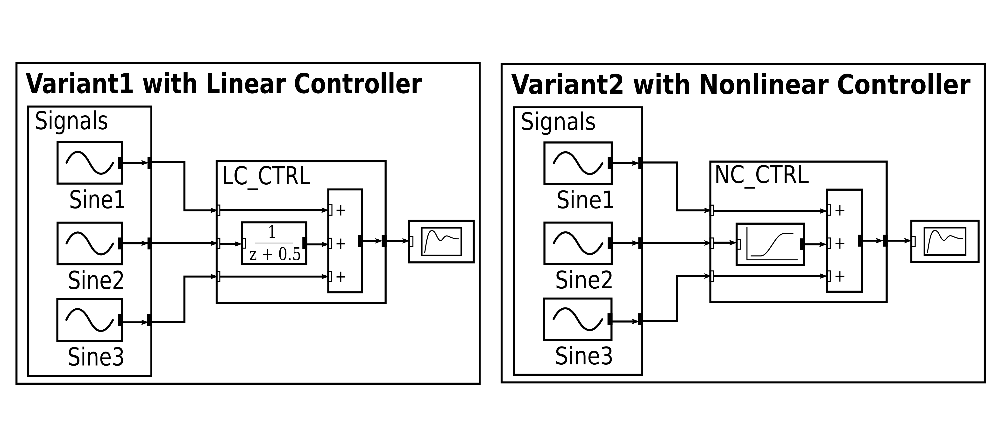
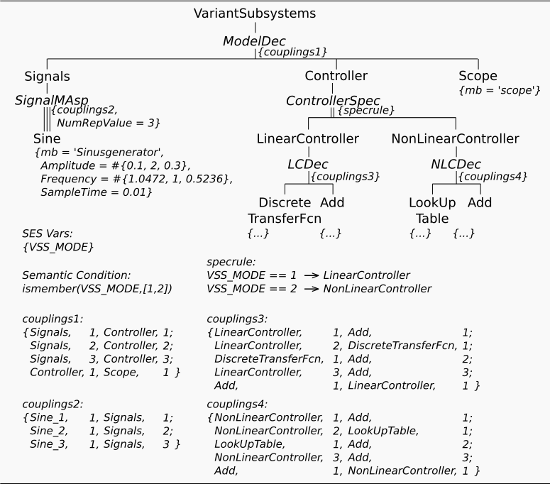

Variant Subsystem (simple)
Motivation
This example shows, how to specify and manage a set of alternative system variants using an SES and the SES Toolbox API. Moreover, it shows how to generate automatically executable Simulink models based on an SES and Simulink's predefined blocksets. The basic problem statement of this example is taken from the Simulink examples documentation, where you can find further information about it.
The MathWorks Source Link (2015-Feb-02):
http://de.mathworks.com/help/simulink/examples/variant-subsystems.html
Alternative system variants based on The MathWorks' problem definition:

Basic SES:

Description
Basically the SES in this example describes 2 model variants, each with:
- 3 signal input generators,
- a linear or a non-linear controller and
- a scope for visualizing
SES
In the SES the two controllers are modelled with the Specialization "ControllerSpec", where each alternative controller is decomposed into specific entities. The selection of a specific controller when pruning is defined by the SES Variable "VSS_MODE". The 3 structural identical signal input generators (sine wave generators) are specified using a MultiAspect, where the number of replications is set to the constant value of 3.
Multisets
The 3 signal input generators (sine wave generators) are all represented by the entity node Sine in the SES. However, the sine wave generators should be configured with different attribute values, such as different amplitudes or frequencies. This can be performed by using Multisets, which are defined with #{...}, such as Amplitude=#{0.1,2,0.3}. Here, the first sine wave generator will be configured with Amplitude=0.1, the second with Amplitude=2 and the third with Amplitude=0.3.
Model Base
For generating an executable model, the general SES/MB approach is used. As model base (MB), where the dynamic models are defined, we use the default Simulink blockset library.
Connection Between SES and MB
The leaf entities in the SES represent and reference specific dynamic models from a MB. For example the entity "Scope" references the Scope block of the Simulink library. In order to define a connection between the SES leaf entities and the dynamic models from the MB, we use the special attribute "mb". You can find on each leaf entity the definition of the "mb" attribute with a specific string value that refers to an appropriate dynamic model. These references will be evaluated during model generation.
Model Generation
The model generation is controlled by a MATLAB function ./startFcn..., defined in the example's directory, which uses the SES toolbox API for pruning and calls the modelBuilder. All other functions involved with the model generation process are located in the example's subdirectory "private".
After pruning an SES, the further model generation process is separated into 3 parts:
- "Initialization"
- "Translation"
- "Finalization"
which are seperated into the two MATLAB functions:
- modelBuilder
- modelTranslator
The modelBuilder function is in charge of the initialization and finalization phase and calls the modelTranslator function. The latter deals with the translation phase.
The translation phase consists of 3 basic steps:
- for each SES leaf entity a MATLAB structure is instantiated, which stores the reference to the model in the MB (entity attribute "mb") and the other configuration parameters
- for each MATLAB structure a model object from the MB is created and added to an initial Simulink model
- the coupling information at SES Aspects are evaluated to connect the dynamic models (blocks) in the Simulink model.
Note: The modelTranslator function only allows translating a flatted pruned entity structure (FPES). For translating a PES you need to adapt the basic algorithm. All model generation functions are only templates and they have to be adapted for any specific problem.